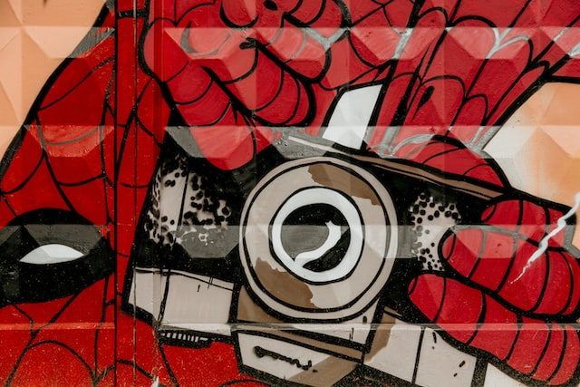
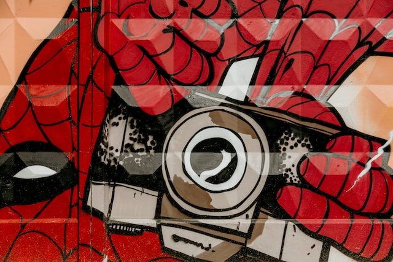

About Me
Greetings! My name is Zachary Pataky, and I'll be the host of your current Spacebnb.
I'm just your average twenty-something-year-old who spends too much time staring at computer screens. I started my programming journey at Canisius College, where I earned a BS in Computer Science. I spent four long, grueling, Zoom-ridden years honing my skills through projects covering distributed computing, artificial intelligence, video game development, web development, and so much more. I was an excellent student, tutor, teacher's assistant, and, most-importantly, member of my campus community.
Nowadays, I spend most of my development time spread between my job and personal studies. I currently work at CYBRA Corporation as a Junior Software Engineer. By all means, I'm a full-stack developer with a preference for front-end design and execution. Outside of work, I dedicate decent chucks of time to my Udemy coursework and other personal projects. I'm a forever student with a growth mindset, and I will do whatever I can to become the best software developer I can be.


 
